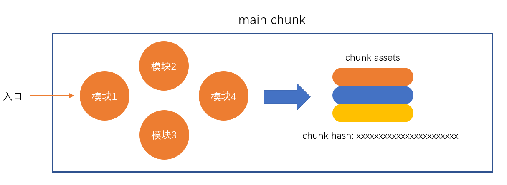

webpack 编译过程
webpack 的作用是将源代码编译（构建、打包）成最终代码

整个过程大致分为三个步骤
- 初始化
- 编译
- 输出

初始化
此阶段，webpack会将CLI参数、配置文件、默认配置进行融合，形成一个最终的配置对象。
对配置的处理过程是依托一个第三方库yargs完成的
此阶段相对比较简单，主要是为接下来的编译阶段做必要的准备
目前，可以简单的理解为，初始化阶段主要用于产生一个最终的配置
编译
- 创建chunk
chunk是webpack在内部构建过程中的一个概念，译为块，它表示通过某个入口找到的所有依赖的统称。
根据入口模块（默认为./src/index.js）创建一个chunk

每个chunk都有至少两个属性：
- name：默认为main
- id：唯一编号，开发环境和name相同，生产环境是一个数字，从0开始
- 构建所有依赖模块

AST在线测试工具：https://astexplorer.net/
简图

- 产生chunk assets
在第二步完成后，chunk中会产生一个模块列表，列表中包含了模块id和模块转换后的代码
接下来，webpack会根据配置为chunk生成一个资源列表，即chunk assets，资源列表可以理解为是生成到最终文件的文件名和文件内容

chunk hash是根据所有chunk assets的内容生成的一个hash字符串
hash：一种算法，具体有很多分类，特点是将一个任意长度的字符串转换为一个固定长度的字符串，而且可以保证原始内容不变，产生的hash字符串就不变
简图

- 合并chunk assets
将多个chunk的assets合并到一起，并产生一个总的hash

输出
此步骤非常简单，webpack将利用node中的fs模块（文件处理模块），根据编译产生的总的assets，生成相应的文件。

总过程

涉及术语
- module：模块，分割的代码单元，webpack中的模块可以是任何内容的文件，不仅限于JS
- chunk：webpack内部构建模块的块，一个chunk中包含多个模块，这些模块是从入口模块通过依赖分析得来的
- bundle：chunk构建好模块后会生成chunk的资源清单，清单中的每一项就是一个bundle，可以认为bundle就是最终生成的文件
- hash：最终的资源清单所有内容联合生成的hash值
- chunkhash：chunk生成的资源清单内容联合生成的hash值
- chunkname：chunk的名称，如果没有配置则使用main
- id：通常指chunk的唯一编号，如果在开发环境下构建，和chunkname相同；如果是生产环境下构建，则使用一个从0开始的数字进行编号
入口和出口
node内置模块 - path: https://nodejs.org/dist/latest-v12.x/docs/api/path.html
出口
这里的出口是针对资源列表的文件名或路径的配置
出口通过output进行配置
入口
入口真正配置的是chunk
入口通过entry进行配置
规则：
- name：chunkname
- hash: 总的资源hash，通常用于解决缓存问题
- chunkhash: 使用chunkhash
- id: 使用chunkid，不推荐